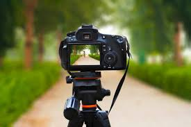

BASE

Imagen: Ed Maverick – “Fuentes de Ortiz (Dahauz Dembow Edit)”
Cinematography
Cinematography is the art of shaping a film's visual narrative through the use of camera work, lighting, composition, and movement. It contributes to creating atmosphere, guiding the viewer's attention, and communicating emotions without words. Cinematographers work closely with directors to decide how each scene should look and feel.
Key Elements of Cinematography
Creator: Dmitry SHISHKIN Credit: Getty Images/iStockphoto
- Camera angles (high, low, eye-level)
- Camera movement (panning, tracking, zooming)
- Lighting (bright, dark, natural, dramatic)
- Shot types (close-up, medium shot, wide shot)
- Color and visual tone

Creator: pixelfusion3d Credit: Getty Images